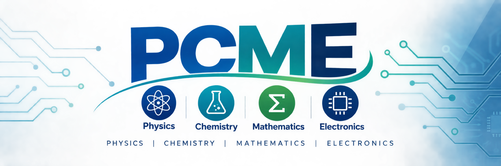
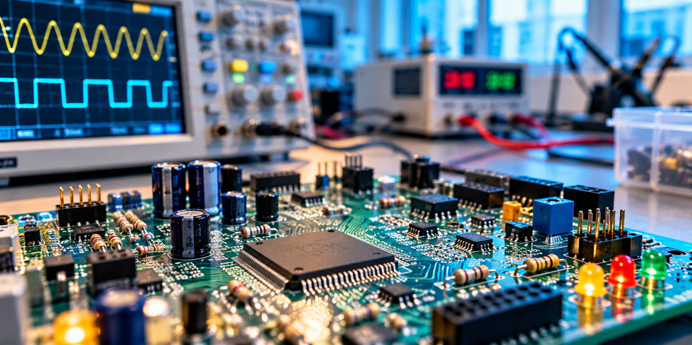
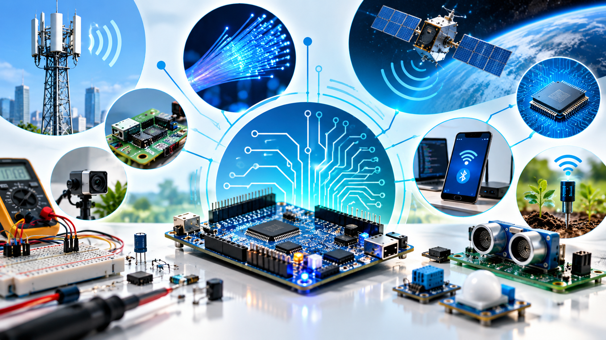
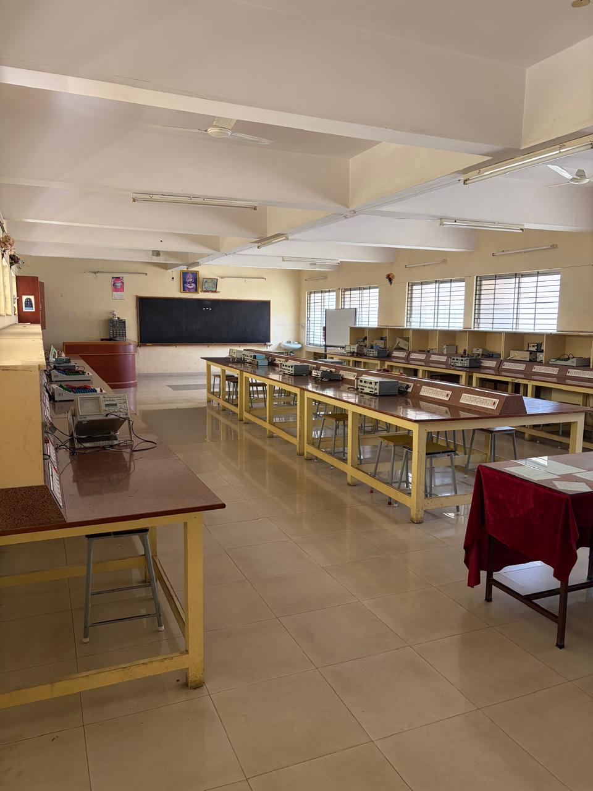
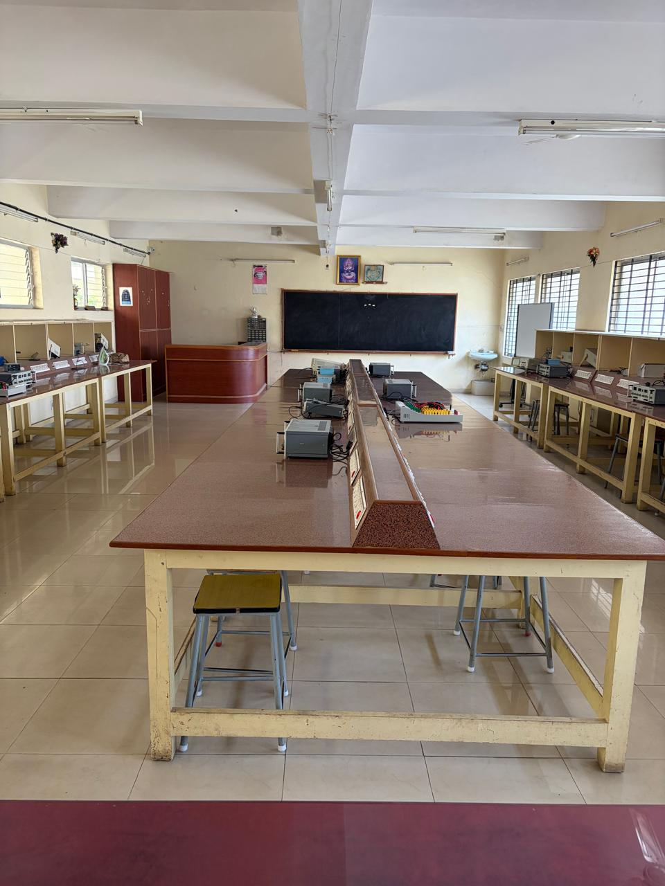
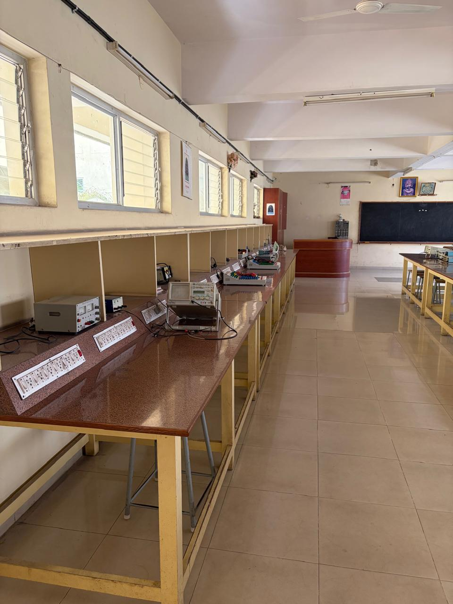
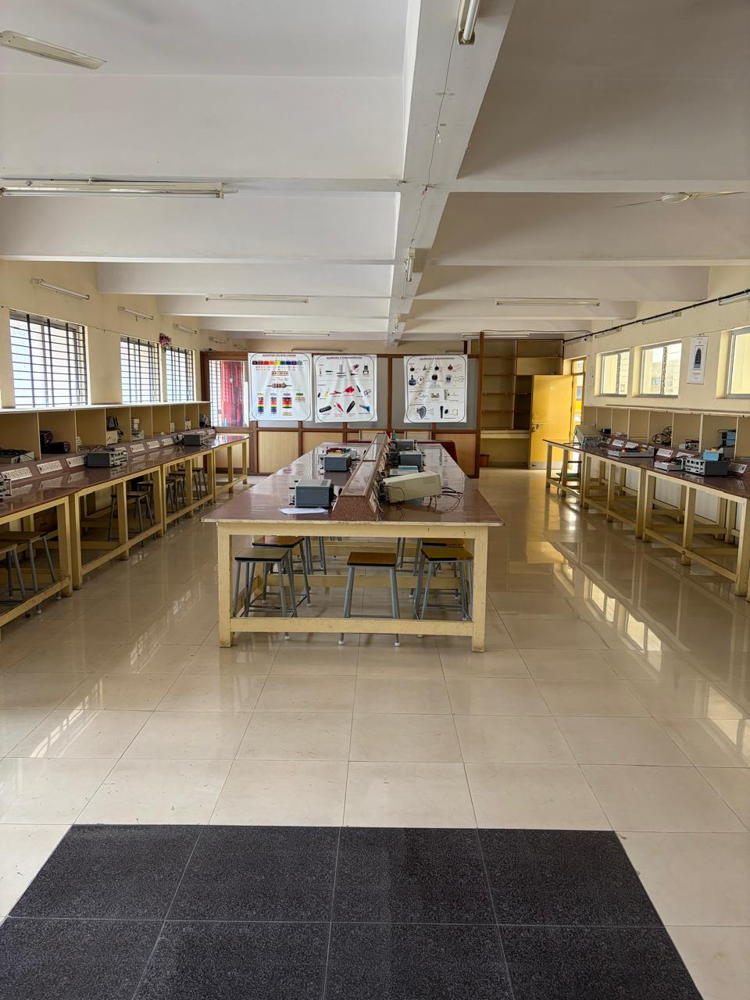
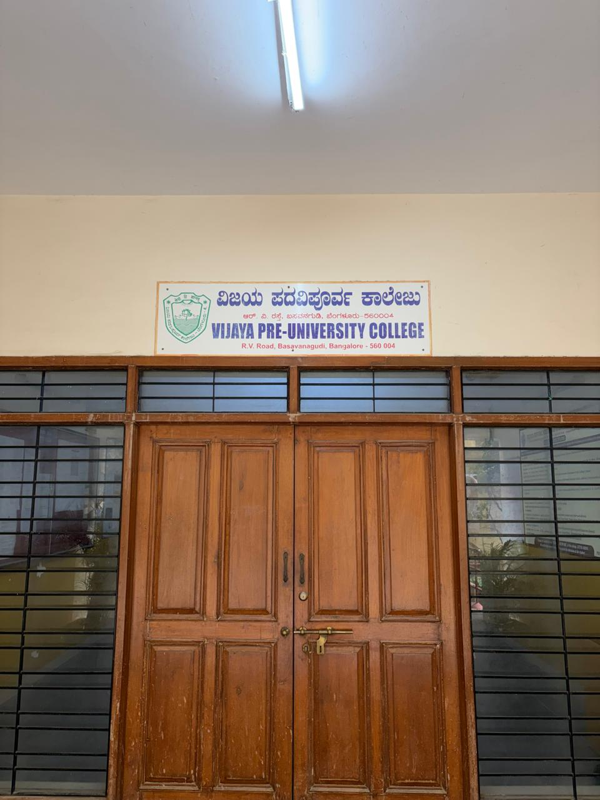
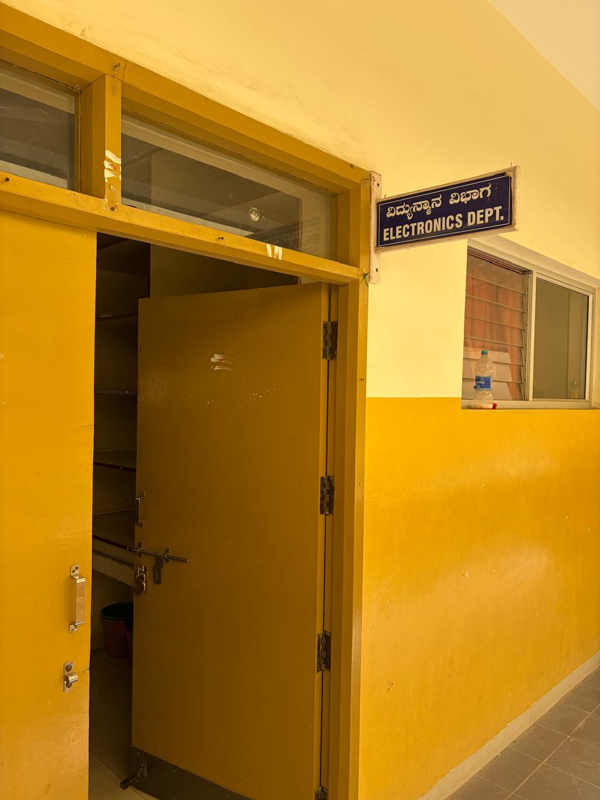
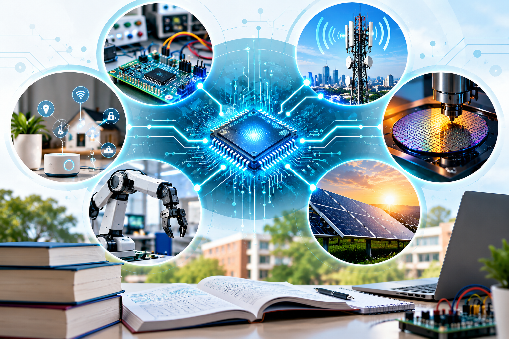

Physics
Understand physical principles, energy, waves and the behaviour of the physical world.
Physics | Chemistry | Mathematics | Electronics
Explore Electronics. Understand Technology. Build a Strong Foundation.
Four subjects. One strong foundation for exploring science, technology and future possibilities.

PCME stands for Physics, Chemistry, Mathematics and Electronics. The combination brings together fundamental sciences and mathematics with an introduction to electronics, circuits, digital systems and technology.
Understand physical principles, energy, waves and the behaviour of the physical world.
Understand matter, materials and the scientific processes behind them.
Develop logical, analytical and problem-solving skills.
Explore components, circuits, digital systems and the technology behind modern devices.
Build a strong foundation in Science and Mathematics while exploring Electronics and modern technology.
Physics, Chemistry and Mathematics provide a foundation for scientific concepts, mathematical reasoning and analytical thinking.
Progress from electronic components and circuits to digital electronics, communication and practical electronics.
Connect concepts with practical work such as Ohm's law, measurements, semiconductor experiments, rectifiers, logic gates and resonance.
Discover FETs, transistors, amplifiers, digital systems, op-amps, oscillators, communication, power electronics and microcontrollers.
From electronic components and circuits to digital systems, communication, microcontrollers and programming.
The Electronics curriculum progresses from fundamental concepts and practical measurements in I PUC to more advanced topics in II PUC, giving students a structured introduction to electronic systems and technology.

Begin with the basic concepts, components, measurements, circuits, semiconductors and digital electronics.
Progress towards amplifiers, digital systems, communication, power electronics, microcontrollers and programming.
From the phone in your hand to the technology used in communication, healthcare, transportation and smart systems.

Modern phones combine processing, memory, sensors, displays and wireless communication in a compact device.
Wireless communication technologies connect devices and systems around us.
Electronics is used in sensing, control, communication and power-management systems in modern vehicles.
Electronic systems support measurement, monitoring and many types of medical equipment.
Sensors, electronics, control systems and computing come together in automated systems.
Sensors, controllers and communication technologies help devices interact with the world around them.
From tiny semiconductor devices to the technologies that connect, compute, communicate and automate our world.
Semiconductor devices form the foundation of many electronic systems and are central to modern computing, communication and electronic devices.
Integrated circuits bring many electronic functions together on tiny chips. VLSI can be explored further through higher education and specialised study.
Electronics and computing can work together through controllers designed for specific functions in devices and systems.
The curriculum introduces wireless communication, AM/FM, mobile networks, Wi-Fi, Bluetooth, optical fibre, satellite communication and RADAR.
Sensors, microcontrollers, communication and software can work together to create connected and smart systems.
Power semiconductor devices and converters are used for controlling and converting electrical power.
Electronics becomes easier to understand when concepts are connected with practical experiments.

The Electronics curriculum combines theoretical concepts with practical work. Students get opportunities to work with electronic components, measurement instruments, circuits and digital systems while developing practical understanding and problem-solving skills.
A practical learning environment where students observe, measure, build and test electronic circuits and systems.



Short explanations that connect Electronics concepts with the technologies shaping our everyday world.
Understand the basic idea behind the materials used in modern electronic devices.
PUC CONNECTIONExplore how many electronic functions can be integrated into a small chip.
BEYOND THE CLASSROOMDiscover how large numbers of electronic components can be integrated into semiconductor chips.
FUTURE EXPLORATIONSee how wireless communication allows devices to exchange information.
PUC CONNECTIONExplore how sensors, controllers, communication and software can create connected systems.
FUTURE TECHNOLOGYExplore how electronic hardware, semiconductor technology and modern computing come together in the age of AI.
FUTURE TECHNOLOGYBuild on your foundation in Science, Mathematics and Electronics through different higher-education pathways.
PCME provides a foundation in Physics, Chemistry, Mathematics and Electronics. After PUC, students can explore different higher-education routes according to their interests, academic performance and applicable eligibility requirements.
Explore engineering and technology-oriented programmes related to electronics, electrical, computing and other technology areas.
Continue with science-oriented higher education in areas such as Physics, Electronics and Mathematics.
Explore computing, computer applications, IT and related areas according to programme requirements.
Build further knowledge in electronics, embedded systems, digital electronics and microcontrollers.
Explore areas such as IoT, robotics, automation, semiconductor technology and VLSI.
Eligibility, subject requirements and admission processes vary by programme, institution and academic year. Always check the applicable official admission requirements before making a course choice.

Vijaya Bifurcated PU College provides a learning environment for students pursuing Pre-University education, with a focus on academic foundation, discipline and preparation for higher education.
The PCME combination gives students a foundation in Physics, Chemistry, Mathematics and Electronics, creating opportunities for further study in science, engineering and technology-related areas.
The Electronics department connects classroom concepts with practical observation, measurement, circuit work and experimentation.

Explore how a foundation in Science, Mathematics and Electronics can connect with different technology domains.

Components, circuits, digital electronics and microcontrollers can provide a foundation for further study in embedded and electronic systems.
Embedded • Microcontrollers • Digital ElectronicsWireless communication, mobile networks, Wi-Fi, Bluetooth and optical communication can be explored through higher education and specialised learning.
Wireless • Mobile • Optical • Communication SystemsSemiconductor concepts, transistors and ICs provide a foundation for further exploration of chip technology, VLSI and semiconductor systems.
Semiconductor • IC Design • VLSI • Chip TechnologyMathematics, logical thinking, digital concepts and programming can connect with further study in computing, software and IT-related areas.
Computing • Programming • Software • ITSensors, electronics, microcontrollers, communication and programming can come together in connected and automated systems.
IoT • Robotics • Automation • Smart SystemsPower semiconductor devices and conversion concepts can lead to further study in power electronics, control and energy-related technology.
Power Electronics • Control • Energy TechnologyTwo subject combinations. Different areas of emphasis. Understand what you will study and consider your interests and future plans.
Includes Electronics as the fourth subject, providing structured exposure to electronic components, circuits, digital electronics, communication, microcontrollers and practical electronics.
Includes Computer Science as the fourth subject, providing an academic emphasis on computing and computer-related learning.
There is no single subject combination that is right for every student. Consider the subjects you enjoy, the type of learning you prefer and the requirements of the higher-education programmes you may wish to pursue.
Clear, practical answers for students and parents exploring PCME and Electronics.
PCME stands for Physics, Chemistry, Mathematics and Electronics. It combines the core science subjects with Electronics, giving students an opportunity to understand both scientific concepts and electronic systems.
The Electronics curriculum introduces students to electronic components, semiconductor devices, digital electronics, measurement instruments, circuits, communication systems, microcontrollers and practical electronics. The I PUC and II PUC curriculum progressively builds these concepts.
No. Electronics combines concepts with practical learning. Students work with components, instruments, circuits and electronic systems and perform practical experiments as part of the curriculum.
PCME can provide a foundation for higher studies in areas such as Electronics, Electrical and Electronics, Engineering, Computer-related fields, Physics, Mathematics, Communication, Embedded Systems and other technology-related programmes, depending on the student's interests and the eligibility requirements of the programme.
Both combinations can lead to technology-related higher studies. PCME gives students exposure to Electronics and electronic systems, while PCMCs gives greater emphasis to Computer Science. The better choice depends on the student's interests, strengths and intended higher-study pathway.
For current admission procedures, eligibility, fee details and other institutional information, students and parents should refer to the college's official information or contact the college directly through the enquiry facility provided on this website.
PCME may be a good option for students who enjoy Science and Mathematics and are interested in understanding electronic devices, circuits, digital systems and technology. Students should also consider their interests and the requirements of the higher-study programmes they may wish to pursue.
Yes. The Electronics curriculum includes practical work involving measurement instruments, electronic components, circuits, semiconductor devices, digital logic and other experiments. Practical learning helps students connect classroom concepts with real electronic systems.
Explore the combination, understand Electronics and speak with the college about admission-related information.
Students and parents can enquire about admission, eligibility, subject combination, current fee details and other college information.